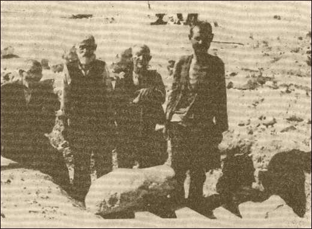

Pictures from our recent events and outreach
W latach 1939 – 1944 teren dystryktu lubelskiego pokryty został przez okupantów hitlerowskich gęstą siecią aresztów, więzień, obozów pracy, obozów jenieckich, obozów przejściowych, przesiedleńczych i ośrodków zagłady. Odgrywały one poważną rolę w utrzymywaniu terroru, przeprowadzaniu eksterminacyjnej polityki narodowościowej wobec Żydów a także wobec Polaków i innych narodów.
Począwszy od wiosny 1940 r. władze okupacyjne przystąpiły do organizowania różnego rodzaju obozów pracy na terenie dystryktu lubelskiego. Jedne z tych obozów przeznaczone były wyłącznie dla Żydów, w innych przebywali oni razem z Polakami. Pod względem zadań, które zostały im wyznaczone i sposobu traktowania więźniów można je podzielić na następujące kategorie:
obozy pracy przymusowej dla Żydów,
obozy pracy typu karnego,
zwykłe obozy pracy,
obozy pracy służby budowlanej.[1]
Obozy pracy dla Żydów – Judenlager, powstawały głównie w latach 1940-
Ze względu na charakter wykonywanej przez więźniów pracy, obozy można także podzielić na 6 następujących grup:
1. obozy pracy dla celów wojskowych,
2. obozy pracy związane z budową dróg,
3. obozy wodno-
4. obozy pracy, przy których uruchomiono zakłady przemysłowe lub warsztaty
5. obozy pracy na kolei
6. różne obozy pracy[5]
Obozy pracy dla celów wojskowych pojawiły się jako pierwsze w 1940 r. Powstanie ich wiązało się z projektem utworzenia na Lubelszczyźnie rezerwatu dla ludności żydowskiej i przygotowywaną w tym czasie agresją na Związek Radziecki. W tym celu Himler jeszcze w styczniu 1940 r. proponował Naczelnemu Dowództwu Wojsk Lądowych skierowanie 2,500 tysięcy Żydów wschodnich do kopania rowów przeciwpancernych na granicy GG i ZSRR. Ponadto Heydrich w dniu 30 stycznia 1940 r. na konferencji w Berlinie wyraził nadzieję, że budowa wału i innych przedsięwzięć na Wschodzie umożliwi skupienie kilkuset tysięcy Żydów w obozach pracy.[6]
Wiosną 1940 r. dowódca SS i policji w dystrykcie lubelskim Odilo Globocnik, spośród zarejestrowanych i zdolnych do pracy Żydów skierował 5,000 osób jako pierwszą partię do budowy nadgranicznych okopów. Podjął też starania o przydział żydowskiej siły roboczej z innych dystryktów aby zasilić wyczerpaną rezerwę Żydów z Lubelszczyzny. Utworzono wówczas obozy w następujących miejscowościach: w Bełżcu, Cieszanowie, Dzikowie Starym i Nowym, Lipsku, Narolu i Płazowie. Centralnym jednak obozem był obóz w Bełżcu.[7]
Z niewolniczej siły roboczej korzystało także hitlerowskie dowództwo wojsk lotniczych. W latach 1940 -

Bialscy Żydzi zatrudnieni przy robotach ziemnych.[9]
W ramach „Programu Otto” – rozbudowy dróg strategicznych, począwszy od wiosny 1940 r. powstawały obozy związane z budową dróg. Plan ten zakładał początkowo wybudowanie 900 km dróg w GG a w roku następnym powiększono go o dalsze 805 km. Prace te wykonywali głownie Żydzi, rzadziej Polacy. Obozy w większości przypadków miały charakter stały. Po wykonaniu odcinka drogi przerzucano obóz z jednej miejscowości do drugiej. Niektóre z tych obozów miały charakter czasowy i najczęściej były likwidowane po ukończeniu zaplanowanych robót. Dziesięciogodzinna praca polegała na zwózce i wyładowywaniu materiałów tzn. cementu, kamieni i żwiru, rozbijaniu kamieni i układaniu nawierzchni. Odbywała się przy pomocy prymitywnych narzędzi lub wprost gołymi rękami. Najwięcej obozów tego typu utworzono w powiecie hrubieszowskim aż 11, kilka w powiecie puławskim, krasnostawskim, janowskim, biłgorajskim i lubelskim.[10]
Wiosną 1940 r. niemieckie władze cywilne przystąpiły do tworzenia kolejnego typu obozów. Były one związane z rozpoczętymi pracami melioracyjnymi, które prowadził Wydział Wyżywienia i Rolnictwa Działu VI – Gospodarki Wodnej w urzędzie szefa dystryktu. Bezpośrednie kierownictwo nad tego rodzaju robotami sprawowały cztery Inspekcje Gospodarki Wodnej, którym podporządkowano w tym względzie ponadpowiatowe regiony. Siedzibami Inspekcji były następujące miasta: Biała Podlaska, Chełm, Lublin i Zamość. Inspekcja z siedzibą w Białej Podlaskiej obejmowała bialski i radzyński powiat. Inspekcja w Chełmie powiat chełmski, wschodnią część powiatu lubelskiego i południową radzyńskiego. Inspekcja w Lublinie obejmowała powiat janowski, puławski i lubelski. Inspekcja w Zamościu obejmowała powiat hrubieszowski, zamojski, krasnostawski i biłgorajski. Zadaniem wymienionych inspekcji było przeprowadzanie regulacji rzek, melioracji łąk, osuszanie bagien, budowa śluz, mostów itp. Roboty te wykonywali głównie Żydzi osadzeni w obozach pracy przymusowej a także Polacy z obozów typu karnego i zwykłych obozów pracy.[11]
Na terenie powiatu bialskiego w ciągu lat 1940 – 1943 istniało 14 obozów związanych z pracami melioracyjnymi i 2 budowlane obozy pracy. Zlokalizowano je w następujących miejscowościach: Biała Podlaskiej, Czosnówka, Dokudów, Dubów, Horbów, Kłoda Duża, Leśna Podlaska, Małaszewicze, Małaszewicze Duże, Ortel Książęcy, Romaszki, Rossosz, Styrzyniec, Szenejki, Terespol, Woroniec. Ogółem zatrudniały one 8,350 Żydów.[12] W obozie w Białej Podlaskiej zatrudnionych było około 3000 Żydów i był to największy obóz w powiecie bialskopodlaskim. Drugim co do wielkości był obóz w Małaszewiczach Dużych w którym pracowało około 1000 Żydów. Kolejnymi były obozy w Małaszewiczach – 800 Żydów, Leśna Podlaska – 500, Czosnówka, Dubów, Horbów, Ortel Książęcy, Szenejki, Styrzyniec, Woroniec około 300 Żydów zatrudnionych w obozach. W obozie w Rossoszu pracowało około 250 Żydów, a w obozach w Kłodzie Dużej, Romaszkach i Terespolu około 200 Żydów. Najmniej licznym był obóz w Dokudowie, gdzie zatrudnionych było około 100 Żydów.[13]
Skoncentrowanie obozów w wyżej wymienionych miejscowościach należy tłumaczyć olbrzymim areałem łąk i bagien, które wymagały ulepszenia do użytku rolnictwa. Regulowano tu rzeki takie jak: Klukówka, Krzna, Muława, Zielawa i inne. Więźniów zatrudniano również przy sypaniu wałów przeciwpowodziowych na Bugu w Terespolu. Prace te należały niewątpliwie do najcięższych. Więźniowie nie otrzymywali żadnej specjalnej odzieży ochronnej, ani butów do pracy w wodzie. Rodzaj pracy zmuszał ich do tego, że 8 do 10 godzin dziennie stali po kolana w wodzie. Mokrej odzieży nie mogli suszyć i w niej pozostawali z powodu braku ubrań i bielizny na zmianę. Przy pracy w wodzie bez obuwia, dolnej i wierzchniej odzieży, najbardziej dokuczliwe stawały się pijawki, które wyjątkowo silnie raniły nogi.[14]
Nie tylko praca przyczyniała się do wyniszczania organizmu więźniów. Wiele osób umierało na skutek głodu, nieludzkich warunków mieszkaniowych, sanitarnych i higienicznych, drakońskiego systemu kar oraz szerzących się chorób głownie tyfusu. Pomocy w żywieniu więźniów dostarczały w pierwszym okresie gminy żydowskie, a także rodziny. Była ona jednak nie wystarczająca. Dlatego też ludność polska często po kryjomu, narażając się na poważne konsekwencje, dostarczała żywność dla pracujących Żydów. Do rzadkości nie należały różne formy samoobrony od najprostszych do zbiegostwa włącznie. Szereg tego typu poczynań kończyła się tragicznie. Egzekucje w żydowskich obozach melioracyjnych także nie należały do rzadkości. Dokonywali ich członkowie załóg lub sami komendanci. Więźniów chorych i nie nadających się do pracy, złapanych na próbie zdobycia żywności oraz tych, u których zauważono wszy, rozstrzeliwano lub wieszano.[15]
W wsi Kłoda Duża obóz dla ludności żydowskiej mieścił się w drewnianym budynku, była to świetlica o wymiarach 12 na 8 metrów. Budynek ten, jak również przyległy do niego teren, nie był ogrodzony. Pilnowali go niemieccy strażnicy obozowi. Obóz mieścił jednorazowo około 200 osób – Żydów, pochodzących z Piszczaca i Chotyłowa. Byli to mężczyźni w wieku od 16 do 50 lat, zatrudnieni przy kopaniu nowego koryta rzeki Lutni oraz pracujący w majorackim lesie państwowym. Do pracy wychodzili około 7.00 rano, a wracali przed zachodem słońca, zawsze w asyście 10 strażników. Tyko raz dziennie otrzymywali jedzenie, przeważnie zupę z brukwi i kawałek chleba. Warunki sanitarne także mieli straszne. W pomieszczeniach panowało ogromne zagęszczenie, nie otrzymywali bielizny ani odzieży na zmianę, co sprzyjało rozwojowi insektów. Ten stan higieniczny oraz głód i ciężka praca doprowadzały organizmy więźniów do krańcowego wycieńczenia, co było powodem częstych wypadków śmierci. W czasie funkcjonowania obozu, tj. do 1942 r., zmarło około 50 osób. W czasie jego likwidacji pozostałych przy życiu wywieziono furmankami do Piszczaca, a następnie w kierunku Białej Podlaskiej. Wielu zastrzelono po drodze, a ciała pozostawiono w przydrożnych rowach. Strażnicy obozowi, mający swoją kwaterę w miejscowej szkole, również wyjechali.[16]
Podobne warunki panowały w obozie pracy w Rossoszy. Mieścił się on w szkole podstawowej. Oprócz budynku szkolnego zajmował obszar około 1 ha. Wokół obozu wzniesiono ogrodzenie z metalowej siatki. Niemcy umieścili tam ludność żydowską z Międzyrzeca Podlaskiego, Rossoszy i Łomaz. Liczba przebywających w obozie więźniów wynosiła przeciętnie 250 osób, w tym około 30 kobiet. Komendantem obozu był funkcjonariusz SS Bruno Kozube. Więźniowie zatrudniani byli przy melioracji, sypaniu wałów i kopaniu rowów. Praca trwała od rana do wieczora. Racje żywnościowe były minimalne, toteż przy każdej okazji więźniowie błagali miejscową ludność o kawałek chleba. Do pracy wychodzili w jednej grupie, nadzorowani przez esesmana i kilku Niemców w czarnych mundurach. Często byli przez nich bici i maltretowani co nie uszło uwadze miejscowej ludności. Obóz istniał tylko przez okres jednego lata, jesienią zaś został zlikwidowany, a Żydzi powrócili do swoich domów.[17]
W pobliskim sąsiedztwie Rossosza, w Romaszkach, w 1942 r. Niemcy zorganizowali podobny obóz pracy dla ludnosci żydowskiej. Zajmował on powierzchnię ok. 0,5 ha. Przebywali w nim mężczyźni i kobiety. Umieszczono ich w murowanej oborze, w której stały dwupiętrowe prycze, służące do spania. Obóz był ogrodzony drutem kolczastym i nadzorowany przez Niemców. Żydzi zostali tu przypędzeni m.in. ze Sławatycz, Nasielska, Parczewa, Rossosza i Wisznic. Pracowali przy melioracji około 10 godzin dziennie. Wyżywienie i warunki higieniczne były takie same, jak w opisanych wcześniej obozach. Często także byli bici przez strażników. Szybko jednak został rozbity przez partyzantów radzieckich. Więźniów oswobodzono a niemiecka straż obozowa uciekła.[18]
Nieco inny charakter miał obóz pracy w Białej Podlaskiej. Nosił on nazwę “Vineta” i mieścił się w barakach na przedmieściu dzielnicy Wola. Funkcjonował od 1941 r. do 17 grudnia 1942 r. Przeciętny stan przebywającej tam ludności żydowskiej wynosił około 3000 osób. Więźniowie pracowali w warsztatach ślusarskich oraz wykonywali prace melioracyjne. Przerażające warunki higieniczne, szerzące się choroby i epidemie jak np. epidemia tyfusu dziesiątkowały znajdujących się tam Żydów. Na 2 dni przed likwidacją obozu, 40 więźniów rozstrzelano w pobliskim lesie Grabarka a pozostałych wywieziono w nieznanym kierunku.[19]
W Małaszewiczach Dużych obóz mieścił się w barakach na terenie tzw. Weroniki, przy torach kolejowych. Założony został jesienią 1942 r. a zlikwidowany w lutym 1944 r. Przebywali tu Żydzi z Polski i zagranicy, przeciętnie 1000 osób równocześnie. Zatrudniano ich przy robotach ziemnych na lotnisku. Chorych i wycieńczonych, których zresztą było wielu, rozstrzeliwano.[20]
W gminie Łomazy, w miejscowości Szenejki wiosną 1941 r. powstał kolejny obóz wodno melioracyjny. Mieścił się on w 3 barakach, a przeciętny stan zaludnienia wynosił około 300 osób. Byli to głownie polscy Żydzi, pracujący przy regulacji rzeki Zielawy. Przez obóz przeszło około 1000 osób. W czasie jego istnienia rozstrzelano 32 pracujących tam Żydów. W trakcie likwidacji obozu, jesienią 1942 r., wszystkich znajdujących się tam więźniów wywieziono w okolice Łomaz a następnie rozstrzelano.[21]
Obozy, przy których uruchomiono zakłady przemysłowe i warsztaty, zaczęły powstawać bardzo wcześnie bo już od grudnia 1939 r., jak np. obóz w Lublinie. Władze SS uruchamiały tym sposobem szeregi warsztatów jak np. szewskie, krawieckie, ślusarskie, zegarmistrzowskie, wytwórnie papy, skrzynek itp. Zatrudniano w nich przymusowo wykwalifikowanych robotników żydowskich, początkowo byli to miejscowi rzemieślnicy dobrowolnie zgłaszający się do pracy a potem jeńcy przywiezieni z Niemiec. W województwie bialskopodlaskim brak wzmianek o istnieniu tego typu obozów. Powstawały one w większych uprzemysłowionych ośrodkach takich jak: Lublin, Trawniki, Poniatowa, Kraśnik, Budzyń.[22]
Brak także wzmianek o istnieniu obozów związanych z pracą na kolei, te jako pierwsze powstały w powiecie zamojskim i puławskim zatrudniając Żydów przy przeładunku wagonów, często były to transporty wojskowe.[23]
Do innych obozów zakwalifikowałabym obóz jeniecki powstały w lutym 1940 r. w budynku tzw. „Czerwonych Koszar” przy ulicy Brzeskiej w Białej Podlaskiej. Znajdowali się w nim żydowscy jeńcy wojenni wzięci do niewoli w okresie walk w 1939 r., przybyli pieszo z Lublina.[24] Konwój jeńców prawdopodobnie wyruszył o świcie 15 lutego 1940 r. z baraków obozowych przy ulicy Lipowej w Lublinie. Eskortowali go żołnierze ubrani w zielone mundury, mógł więc to być Wehrmacht. Po drodze z Lublina do Parczewa, jak podają dokumenty Głównej Komisji Badań Zbrodni Hitlerowskich, mordowano większą lub mniejszą grupę jeńców. Pierwszej zbiorowej egzekucji dokonano w miejscowości Niemce, mordując 11 jeńców, którzy nie nadążali w drodze. Kolejnego masowego mordu dokonano 16 lutego w pobliżu wsi Pałecznica, rozstrzeliwując około 150 Żydów, których zwłoki zakopali w zbiorowej mogile miejscowi chłopi. W nocy kilka godzin później w kolonii Juliopol, jeńcy żydowscy zamknięci zostali w stodole, po czym wyprowadzano ich po kilku i strzałem w tył głowy mordowano w olszowym zagajniku nieopodal wsi Działyń. Ta egzekucja pochłonęła dalszych 120 ofiar.[25]
18 lutego konwój dotarł do Parczewa. Zarządzono dłuższy postój a Żydów ulokowano w stodole. W dniach następnych zabito tam więcej niż 100 jeńców kopiąc następnie w mogiłach na cmentarzu żydowskim w Parczewie a obecnym parku miejskim. Przy zakopywaniu zwłok pracowali Żydzi wyznaczeni przez parczewski Judenrat, którzy po wykonaniu zadania, także zostali zabici. Po trzech dniach konwój ruszył do Białej Podlaskiej a na miejsce dotarło około 287 jeńców.[26] Inne źródła podają, że z grupy ponad 2,000 jeńców jaka została wyprowadzona z Lublina z ulicy Lipowej do obozu w Białej Podlaskiej dotarło około 800 Żydów.[27]
Oprócz Lublinian w obozie w „Czerwonych Koszarach” znajdowali się także jeńcy z trzech dużych obozów: stalagu II D w Stargardzie, stalagu I B w Olsztynku i stalagu II B w Czarnym. Ocenia się, że przez ten obóz, usytuowany w dzielnicy Wola, przeszło około 5,000 Żydów. Według relacji jednego z ocalałych świadków Eliasza Magida w obozie wskutek potwornych warunków życia i głodu codziennie uśmiercano od 15 do 30 osób. Pozbawiano Żydów statusu jeńca wojennego a od maja 1941 r. traktowano ich jak więźniów cywilnych. W takcie zorganizowanej selekcji w obozie pozostawiono rzemieślników wykwalifikowanych takich jak cieśle, stolarze, ślusarze, krawcy, szewcy itp. i zatrudniono jako robotników kwatermistrzostwa Luftwaffe, na terenie byłej fabryki samolotów. Pozostałych jako siłę bez kwalifikacji przeznaczono do szybkiego uśmiercenia w obozach wodno – melioracyjnych. Komando fachowców obsługujące bialskie lotnisko istniało jeszcze w czerwcu 1944 r. Zlikwidowano je tuż przed wycofaniem się Niemców z Białej Podlaskiej.[28]
[1] Edward Dziadosz, Józef Marszałek, Więzienia i obozy w dystrykcie lubelskim w latach 1939-
[2] Ibid., s. 60.
[3] Ibid.
[4] Ibid.
[5] Jerzy Doroszuk, Zagłada obywateli…, op. cit., s. 138.
[6] E. Dziadosz, J. Marszałek, Więzienia i obozy…, op. cit., s. 60-
[7] Ibid., s. 61.
[8] J. Doroszuk, Zagłada obywateli…, op. cit., s. 138-
[9] Zbrodnie hitlerowskie w regionie bialskopodlaskim 1939-
[10] E. Dziadosz, J. Marszałek, Więzienia i obozy…, op. cit., s. 66-
[11] Ibid., s. 69,70.
[12] Wiesław Gromadzki, Pozostały tylko macewy i pomniki, Dziennik Lubelski nr 158, Lublin 1990, s. 5 i J. Doroszuk, Zagada obywateli…, op. cit., s. 139
[13] Ibid.
[14] E. Dziadosz, J. Marszałek, Więzienia i obozy..., op. cit., s. 76,78.
[15] Ibid., s. 78.
[16] OKL/Ds. 391/67.
[17] OKL/Ds. 251/67.
[18] OKL/Ds. 11/68.
[19] J. Doroszuk, Zagłada obywateli…, op. cit., s. 140.
[20] Ibid.
[21] Ibid. s. 141.
[22] E. Dziadosz, J. Marszałek, Więzienia i obozy…, op. cit., s. 81.
[23] Ibid., s. 86.
[24] Jerzy Sroka, Ślad…, op. cit.
[25] Andrzej Pawluczuk, Maciej Sobczyński, Luty 1940 -
[26] Ibid. s. 6.
[27] J. Sroka, Ślad, op. cit.
[28] A. Pawluczuk, M. Sobczyński, Luty 1940 r…, op. cit., s. 8.
Obozy pracy